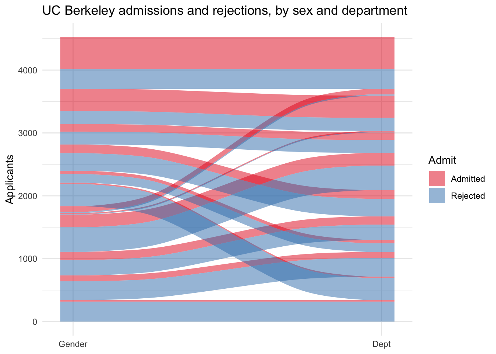
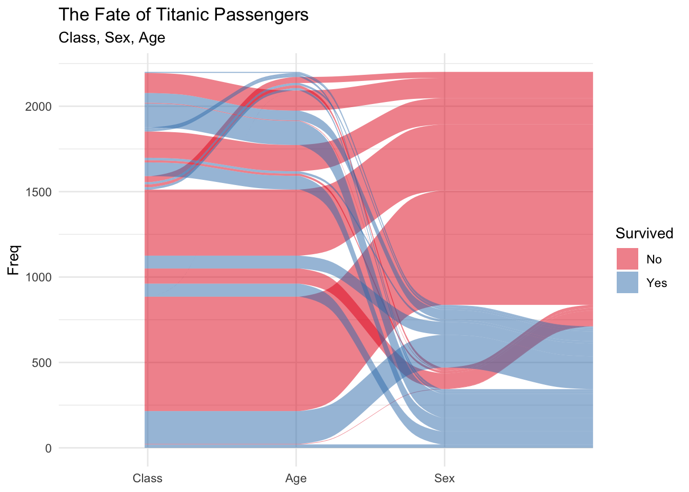

The aforementioned plots are methods for visualising the flow of data through a stream of markers. I was motivated to show this because enough of you deal in orders, tickets, and the like the flow visualisation of a system might prove of use. I will work with a familiar dataset. These are data on Admissions at the University of California Berkeley. The data exist as an internal R file in tabular form.
library(tidyverse)library(ggalluvial) # if this is not installed, install.packages("ggalluvial")data("UCBAdmissions") # This dataset is built in as a set of tables.UCBAdmissions # What does it look like?
, , Dept = A
Gender
Admit Male Female
Admitted 512 89
Rejected 313 19
, , Dept = B
Gender
Admit Male Female
Admitted 353 17
Rejected 207 8
, , Dept = C
Gender
Admit Male Female
Admitted 120 202
Rejected 205 391
, , Dept = D
Gender
Admit Male Female
Admitted 138 131
Rejected 279 244
, , Dept = E
Gender
Admit Male Female
Admitted 53 94
Rejected 138 299
, , Dept = F
Gender
Admit Male Female
Admitted 22 24
Rejected 351 317
UCBADF <-data.frame(UCBAdmissions) # Force it into a data.frameUCBADF # This is what the data structure needs to look like.
Admit Gender Dept Freq
1 Admitted Male A 512
2 Rejected Male A 313
3 Admitted Female A 89
4 Rejected Female A 19
5 Admitted Male B 353
6 Rejected Male B 207
7 Admitted Female B 17
8 Rejected Female B 8
9 Admitted Male C 120
10 Rejected Male C 205
11 Admitted Female C 202
12 Rejected Female C 391
13 Admitted Male D 138
14 Rejected Male D 279
15 Admitted Female D 131
16 Rejected Female D 244
17 Admitted Male E 53
18 Rejected Male E 138
19 Admitted Female E 94
20 Rejected Female E 299
21 Admitted Male F 22
22 Rejected Male F 351
23 Admitted Female F 24
24 Rejected Female F 317
An Alluvial
This is the tidy version that we worked with at the individual level. To make this code work, change the below locations to import the same data.
M.F Admit Dept
1 Male Yes A
2 Male Yes A
3 Male Yes A
4 Male Yes A
5 Male Yes A
6 Male Yes A
To put this data in a table, using the %>% pipe operator, we will pass the tidy data, group it by the elements of the alluvial, and then generate the counts.
# A tibble: 24 × 4
M.F Dept Admit count
<fct> <fct> <fct> <int>
1 Female A No 19
2 Female A Yes 89
3 Female B No 8
4 Female B Yes 17
5 Female C No 391
6 Female C Yes 202
7 Female D No 244
8 Female D Yes 131
9 Female E No 299
10 Female E Yes 94
# … with 14 more rows
ggalluvial()
The alluvial requires an additional package ggalluvial. We can install it through
install.packages("ggalluvial")
What can it do? It needs data. The y axis is always the total counts in the cells. Then we set axes with a number after to show the phases from left to right. So here, axis1 will be gender and axis two will be Department. Admitted and non-admitted students flowed with colors depicting them move through the system. We want to track them by their admitted status. The alluvial itself has y as Frequency and the various axis* as the phases to track. The outcome of interest enters the fill so that color shows the outcome of interest flowing through the strata.
With the system data
This is the vignette solution to these data with the package. Extending it to any data is a two step process.
UCBADF %>%ggplot(.,aes(y = Freq, axis1 = Gender, axis2 = Dept)) +geom_alluvium(aes(fill = Admit), width =1/12) +geom_stratum(width =1/12, fill ="black", color ="grey") +geom_label(stat ="stratum", label.strata =TRUE) +scale_x_discrete(limits =c("Gender", "Dept"), expand =c(.05, .05)) +# Fix the x axisscale_fill_brewer(type ="qual", palette ="Set1") +# Give it nice colorsggtitle("UC Berkeley admissions and rejections, by sex and department") +# give it a titlelabs(y="Applicants") +theme_minimal()

A simple one [or as simple as I can]
A lot of the code is just prettying. The most basic plot needs this:
ggplot(UCBADF, # plot the dataaes(y = Freq, axis1 = Gender, axis2 = Dept)) +# what are the named axesgeom_alluvium(aes(fill = Admit), width =1/12) +# what variable will fill the paths; Admission here.geom_stratum(width =1/12, fill ="black", color ="grey") +# This set the strata that our people will move through The one 12 is 12 combinations; the two colors here dfine the background and text for the labels.geom_label(stat ="stratum", label.strata =TRUE) # This labels them.
, , Age = Child, Survived = No
Sex
Class Male Female
1st 0 0
2nd 0 0
3rd 35 17
Crew 0 0
, , Age = Adult, Survived = No
Sex
Class Male Female
1st 118 4
2nd 154 13
3rd 387 89
Crew 670 3
, , Age = Child, Survived = Yes
Sex
Class Male Female
1st 5 1
2nd 11 13
3rd 13 14
Crew 0 0
, , Age = Adult, Survived = Yes
Sex
Class Male Female
1st 57 140
2nd 14 80
3rd 75 76
Crew 192 20
TDF <-as.data.frame(Titanic)TDF
Class Sex Age Survived Freq
1 1st Male Child No 0
2 2nd Male Child No 0
3 3rd Male Child No 35
4 Crew Male Child No 0
5 1st Female Child No 0
6 2nd Female Child No 0
7 3rd Female Child No 17
8 Crew Female Child No 0
9 1st Male Adult No 118
10 2nd Male Adult No 154
11 3rd Male Adult No 387
12 Crew Male Adult No 670
13 1st Female Adult No 4
14 2nd Female Adult No 13
15 3rd Female Adult No 89
16 Crew Female Adult No 3
17 1st Male Child Yes 5
18 2nd Male Child Yes 11
19 3rd Male Child Yes 13
20 Crew Male Child Yes 0
21 1st Female Child Yes 1
22 2nd Female Child Yes 13
23 3rd Female Child Yes 14
24 Crew Female Child Yes 0
25 1st Male Adult Yes 57
26 2nd Male Adult Yes 14
27 3rd Male Adult Yes 75
28 Crew Male Adult Yes 192
29 1st Female Adult Yes 140
30 2nd Female Adult Yes 80
31 3rd Female Adult Yes 76
32 Crew Female Adult Yes 20
ggplot(TDF,aes(y = Freq, axis1 = Class, axis2 = Age, axis3 = Sex, axis4=Survived)) +geom_alluvium(aes(fill = Survived), width =1/24) +geom_stratum(width =1/12, fill ="white", color ="black") +geom_label(stat ="stratum", label.strata =TRUE) +scale_x_discrete(limits =c("Class", "Age", "Sex")) +# Fix the x axisscale_fill_brewer(type ="qual", palette ="Set1") +# Give it nice colorsggtitle("The Fate of Titanic Passengers", subtitle="Class, Sex, Age") # give it a title

Beyonce Palettes
Now for one better, we can combine variables. I will use the titanic data and combine Age and Sex into a new variable people. They will now flow through Class to Survival starting with four types of people. I recently discovered Beyonce palettes; I will use Beyonce 41 for this alluvial.
# devtools::install_github("dill/beyonce")library(beyonce)TDF2 <- TDF %>%mutate(People = Sex:Age, AgeS = Age:Survived)ggplot(TDF2,aes(y = Freq, axis1 = People, axis2 = Class, axis3=Survived)) +geom_alluvium(aes(fill = AgeS), width =1/24) +geom_stratum(width =1/12, fill ="white", color ="black") +geom_label(stat ="stratum", label.strata =TRUE) +scale_x_discrete(limits =c("People", "Class", "Survived")) +# Fix the x axisscale_fill_manual(values =beyonce_palette(41)) +# Give it nice colorsggtitle("The Fate of Titanic Passengers", subtitle="Class, People") +# give it a titletheme_minimal()